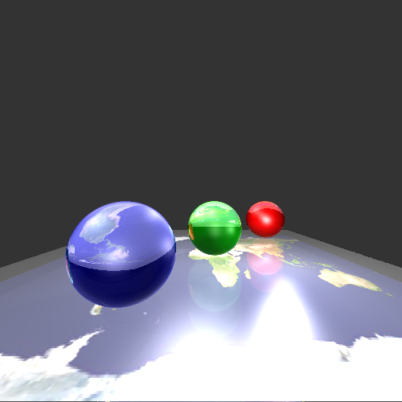
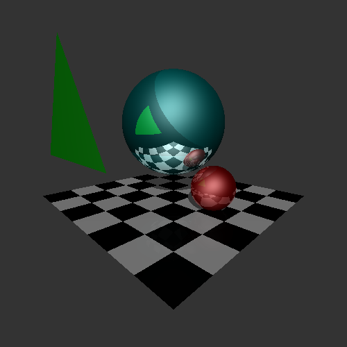

Jie Li
Jie Li
PhD Student, Computer Science
Minneapolis, US
lixx4611@umn.edu
612-443-8076
About Me
I'm a second year PhD student in the Department of Computer Science and Engineering at the University of Minnesota, Twin Cities, advised by Prof. Rahul Narain. My research interest focuses on physics based animation. I'm currently working on cloth mesh adaptive remeshing and contact friction solver, which is a project we collaborate with Gilles and Florence at INRIA. Previously, I worked 3 years as an Android Engineer at Sina Weibo.
Projects
Cloth Simulation with Implicit Contact and Friction Solver
7/2016 - now
A project we collaborate with Gilles and Florence at INRIA. They have the nice nodal impact solver which implicitly handles contact and exact Coulomb friction very well. My work is merging close impacts and inserting nodes at the collision point so that their solver can be well integrated. A remeshing process was applied so that the triangulation of the mesh is well-conditioned, avoiding bad convergence of the solver. Also, I improved their solver to handle constraints on faces and edges (rather than just nodes). This improvement might boost the performance, which is under investigation.
Ray Tracer (Course Project: CSci 5607)
9/2016 - 11/2016
A ray tracer renders with Phong model, which handles shadows, textures, refractions and reflections.
 R-Simp LOD Algorithm. (Final Project: CSci 5608)
4/2016-5/2016
Reverse Simplification is an LOD algorithm that simplifies model from coarseness to refinement.